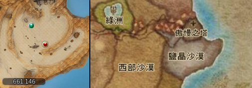
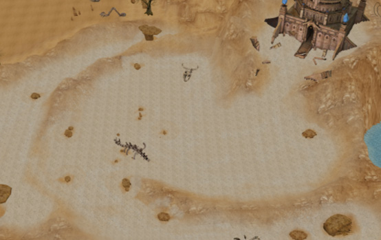
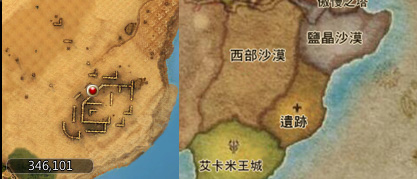

艾卡米拿地圖介紹
| 艾卡米拿領地地圖 |
|---|
新地圖由 9 個地區組合而成，進入該領地至少需要等級45級，怪物與軍團皆有一定強度。
強獸人村莊
受邪惡力量折磨後進化的哥布林族群「強獸人」棲息地，強獸人族群的力量達到了比哥布林更完美的境界。
東部沙漠
通過了強獸人村莊後，會進入到炎熱的東部沙漠地區，受到熱力與邪惡氣息侵蝕的沙漠怪物異常暴躁，經常對路過的冒險者發起攻擊。
西部沙漠
與東部沙漠互相連結的西部沙漠，又稱為死亡沙漠，沙漠內潛藏著比東部沙漠更可怕的怪物。
探險地
探險地位於艾卡米拿地圖的東北方，是尚未被開墾的區域，但內部卻有一個神祕的祭壇，久遠之前很多冒險者嘗試進入探索，但最後都沒有回來。
綠洲
綠洲位於東部與西部沙漠中間，是艾卡米拿商人群聚的村落，當冒險者來到艾卡米拿需要休息或補給時，可以到這個地區進行喘息。

鹽晶沙漠
鄰近傲慢之塔的鹽晶沙漠，因為受到海風的影響，導致該地區有很多結晶鹽出現，而怪物也受到鹽份的影響出現了變異，出現了色差的怪異現象。  
遺跡
艾卡米拿古代王國的遺址，曾經為國王奮戰的士兵、守護者們受到了邪惡力量的影響，復活後在此地徘徊，變成了一個很危險的區域。 
傲慢之塔
隸屬艾卡米拿的傲慢之塔，是現今最難的地監，目前可以探索到第十層，據傳傲慢之塔以前是魔法師用來修煉與探索魔法的地區，但目前已被怪物佔領。
艾卡米王城
因戰爭而差點覆滅的王國，部分的人民為了躲避戰爭和異變的怪物移居了，但從極具特色的輝煌的建築上看，可以感受到王城當初的繁華。